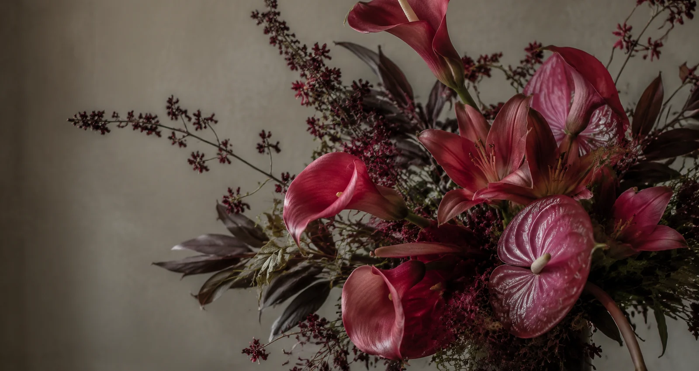
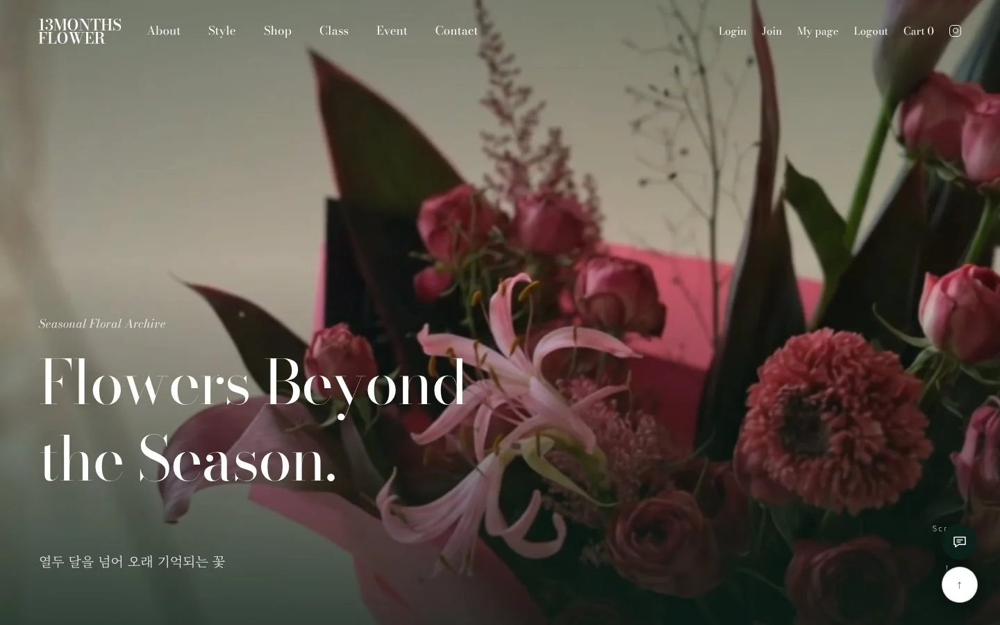
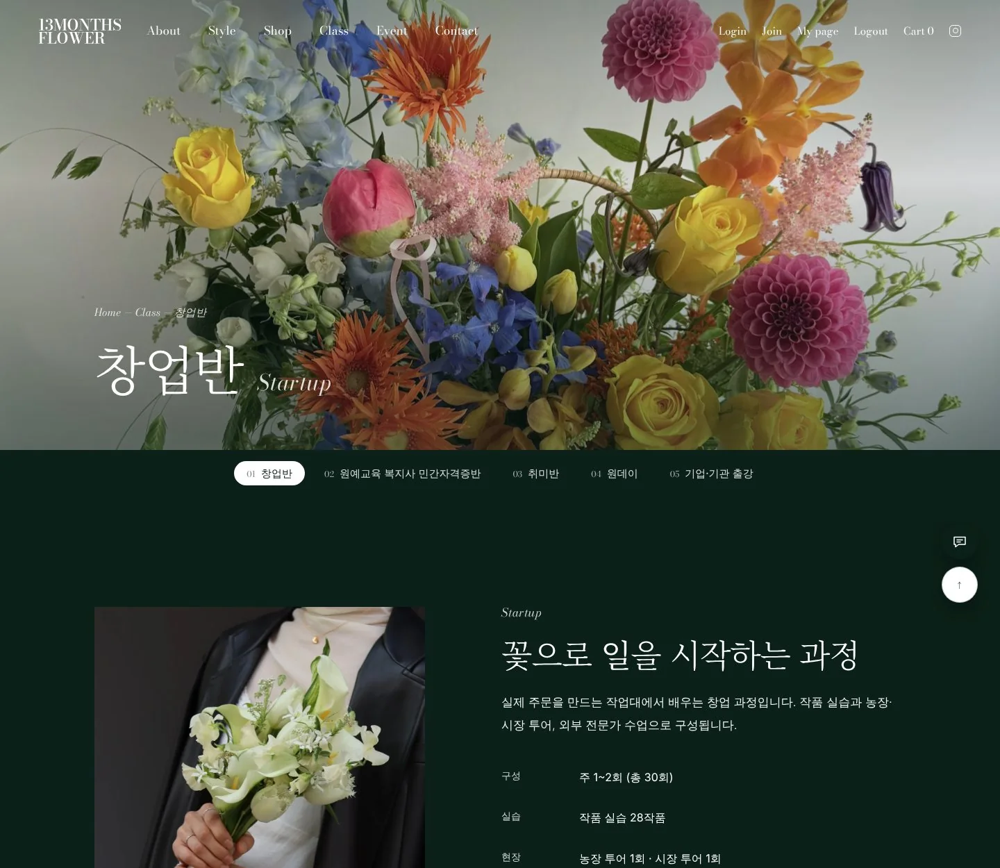
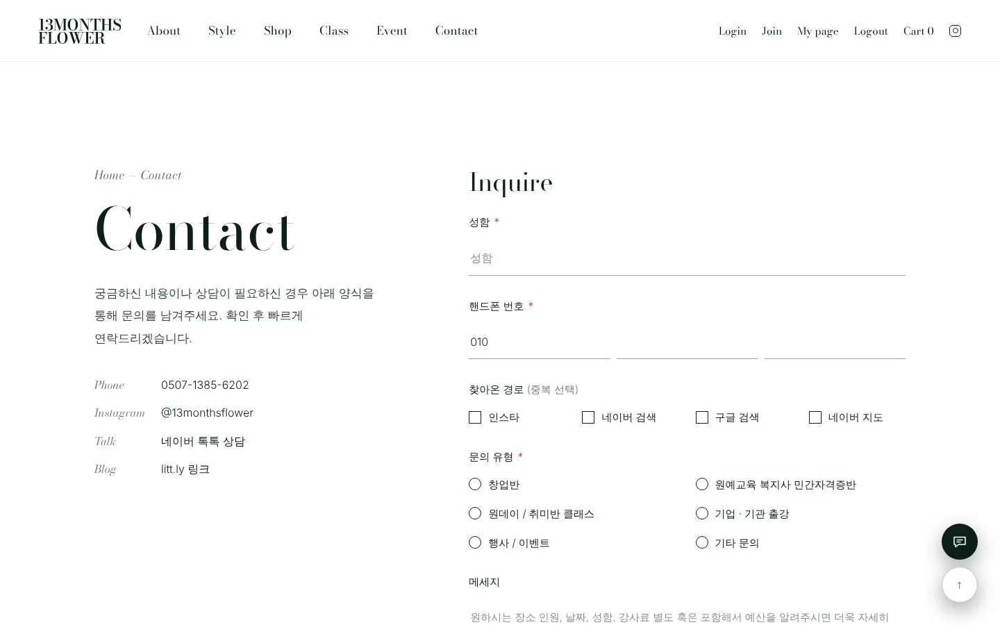
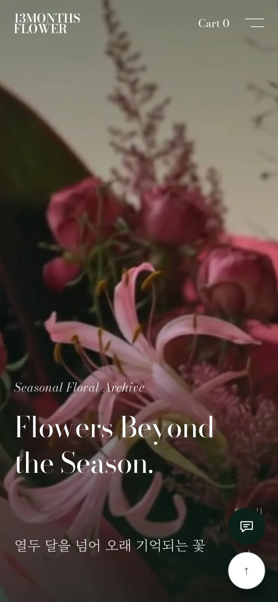
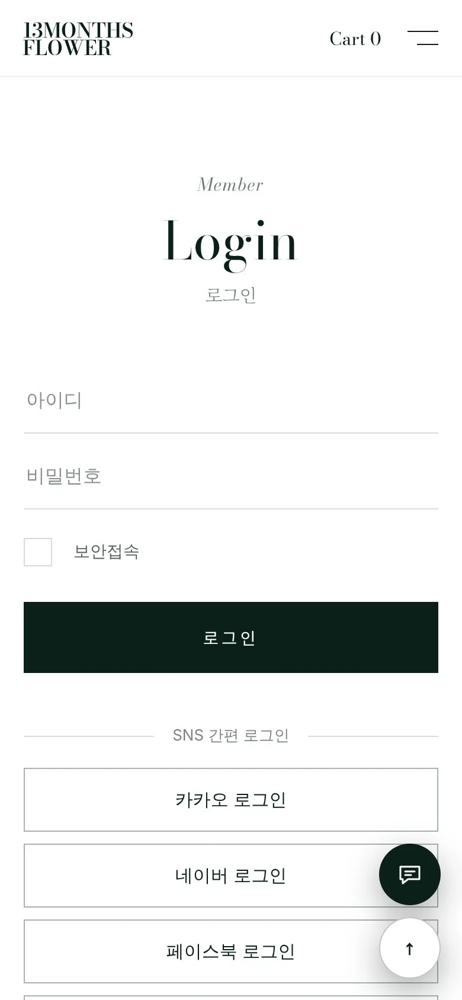
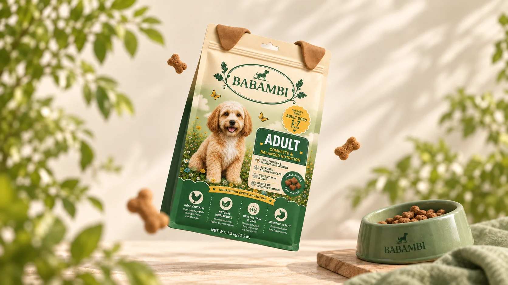

13 MONTHS
플라워 샵 ‘열세달꽃’의 카페24 쇼핑몰을 전면 리디자인하고 스킨으로 퍼블리싱했습니다. SEO 작업, SNS 간편 로그인 연동, 메일로 받는 문의폼까지 진행했고, 실제로 운영 중인 사이트입니다.
Live Site목표
- 무료 스킨 기반이어도 유료 스킨처럼 보이는 완성도로 리디자인
- SEO 작업으로 ‘열세달꽃’ 관련 검색에서 잘 찾히도록 개선
- 클래스 강의 문의가 많이 들어오는 사이트
- 계절마다 달라지는 작업을 아카이브처럼 쌓아 보여주는 구조
담당
- 웹 디자인
- 카페24 스킨 퍼블리싱
- 문의폼 · SNS 간편 로그인 연동
- 도메인 연결과 검색 노출 설정(SEO)
결과
- SEO 작업 직후 클래스 강의 문의가 평소보다 늘었습니다.
- 병원·기관에서 연락이 많이 왔고, 단체 클래스 출강도 확정되었습니다.
- 문의폼으로 들어온 내용은 메일로 바로 접수
기술
- HTML · CSS · jQuery
- Cafe24 스킨
- SEO
- Web3Forms
-
01
기획
-
02
시안 잡기
-
03
시안 다듬기
-
04
카페24 스킨 퍼블리싱
-
05
검수 및 수정
클라이언트 피드백을 받아 반복 수정
-
06
도메인 연결 · SEO
검색엔진 등록, 사이트맵, 구조화 데이터
작업하면서 해결한 문제
운영 중인 쇼핑몰이라 기존 구조는 지키고, 클라이언트 피드백이 올 때마다 수정본을 다시 만들어 전달했습니다.
카페24 기본 CSS가 디자인을 덮어씀
로그인 버튼에 둥근 모서리가 계속 남았습니다. 기본 모듈 CSS가 ID 선택자와 !important로 걸려 있었기 때문입니다.
해결 로그인, 회원가입, 아이디·비밀번호 찾기를 각각 전용 래퍼로 감싸 같은 우선순위로 덮어쓰고, 인풋과 버튼의 가로 폭과 정렬을 하나의 규칙으로 통일했습니다.
Cafe24 module CSS · specificity · scoped wrapper
갤러리 사진이 한꺼번에 떠서 오류처럼 보임
Style 페이지는 작품 사진을 카테고리별로 보여줍니다. 필터나 More를 누르면 사진이 따닥거리며 뜨고, 필터가 사진을 전부 숨겨 버리는 충돌도 있었습니다.
해결 공용 필터 핸들러와 속성명이 겹쳐서 갤러리 전용 속성으로 분리했습니다. 사진은 순서대로 부드럽게 나타나게 하고, More는 12장씩 불러오게 했습니다.
jQuery · data attribute · staggered fade-in · lightbox
이미지가 잘리거나 영역을 넘침
정기구독 이미지가 화면 전체를 덮고, 클래스 상세의 왼쪽 이미지가 아래로 밀렸습니다. 공통 이미지 규칙의 position 값이 다른 레이아웃을 깨고 있었습니다.
해결 공통 규칙의 우선순위를 낮추고, 이미지가 들어가는 부모마다 기준을 명시했습니다. 이미지 비율은 페이지마다 같은 규격으로 맞췄습니다.
position · aspect-ratio · :where() · overflow
서버 없이 문의를 메일로 받기
카페24에는 직접 만든 폼을 받아 줄 서버가 없습니다. 외부 폼 서비스를 연결했더니 수신 메일에서 한글 항목명이 깨졌습니다.
해결 항목명은 영문으로 보내고, 한글 라벨은 본문 안에 직접 넣어 메일에서 읽을 수 있게 했습니다. 필수 입력과 개인정보 동의 검증도 함께 넣었습니다.
Web3Forms · FormData · validation
검색에 잡히도록 한 작업
새 도메인을 연결하고, 검색엔진이 사이트를 알아보게 하는 설정까지 직접 진행했습니다.
-
도메인 연결과 장애 진단
기존 주소에서 새 도메인으로 연결하고, DNS 문제를 확인했습니다.
-
검색엔진 등록
네이버 서치어드바이저, 구글 서치 콘솔에 사이트를 등록하고 카페24 SEO 설정에 소유 확인 태그를 넣었습니다.
-
Title · Description · Canonical · Open Graph
페이지마다 제목과 설명 문구를 따로 써서 적용했습니다.
-
구조화 데이터(JSON-LD)
매장 정보를 검색엔진이 읽을 수 있는 형식으로 넣었습니다.
-
이미지 대체 텍스트와 지연 로딩
갤러리 이미지에 alt와
loading="lazy"를 적용했습니다. -
사이트맵 구조 점검
카페24가 자동으로 만드는 sitemap.xml에 직접 만든 페이지(/13months/…)가 빠져 있는 것을 확인했습니다.
Foundations
-
White
바탕 · 흰 섹션
#FFFFFF -
Deep green
글자 · 버튼 · 진녹색 섹션
#0B2018
- 큰 제목 · 영문 Bodoni Moda Flowers Beyond the Season.
- 본문 · 정보 · 조작 요소 Noto Sans KR 열두 달을 넘어 오래 기억되는 꽃 · 창업반 · 원데이
Screens

첫 화면: 영상 히어로
영상이 나오기 전 사진이 먼저 보이던 문제를 없애고, 흰색과 딥그린 두 색으로 정리한 메인입니다. 영문 제목은 로고와 같은 계열의 세리프를 썼습니다.

클래스 상세 5종
창업반, 원예교육 복지사 자격증반, 취미반, 원데이, 기업·기관 출강을 같은 틀로 만들고 왼쪽 이미지 정렬을 통일했습니다.
→ PROBLEM 03
문의폼
성함, 핸드폰, 찾아온 경로(중복 선택), 문의 유형, 메시지, 개인정보 동의. 필수 항목은 *로 표시하고 접수된 문의는 메일로 받습니다.
→ PROBLEM 04

모바일 · 회원 화면
카페24 기본 로그인 화면을 사이트 스타일에 맞추고 SNS 간편 로그인을 연동했습니다. 390px 폭에서 가로 스크롤 없이 입력칸과 버튼 폭이 같도록 맞췄습니다.
→ PROBLEM 01카페24 스킨 퍼블리싱
카테고리 필터 갤러리
영상 히어로 · 패럴랙스 띠
이미지 지연 로딩
반응형 레이아웃 (데스크톱 · 모바일)
문의폼 메일 접수
로그인 · 회원가입 스타일 통일
SNS 간편 로그인 연동
네이버 톡톡 상담 연결
도메인 장애 진단 · 새 도메인 연결
검색 노출 설정 · Title / Description / Canonical
구조화 데이터 · 검색 서비스 등록
코딩
이미지 · 비주얼 편집
